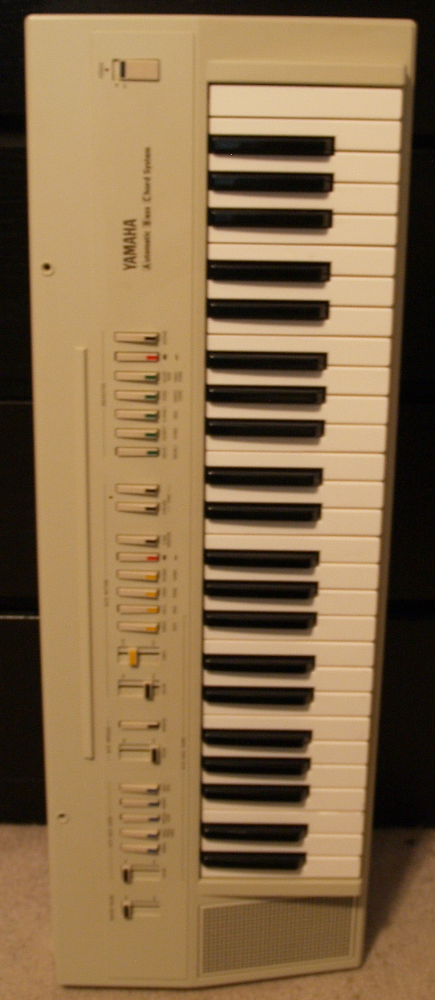

Home of TransistorBased

| Gear Name |
Acquisition Year |
Coolest Feature |
| *Alesis Nitro kit |
2022 |
It's super easy to record with and has MIDI! |
| *Behringer RD-6 |
2021 |
The overdrive makes the drums all crispy |
| *Behringer TD-3 |
2021 |
This was a drunk purchase while at a Deadmau5 concert |
| *Focusrite Scarlett 4i4 |
2021 |
It makes recording super easy and has a really high sample rate |
| *Korg MS-20 Mini |
2021 |
It's white and super rare! |
| *Nord Stage 3 |
2020 |
It's incredibly easy to dial in fantastic sounds and it feels amazing to play |
| *Squier Affinity J-Bass |
2018 |
It's really playable and has solid pickups |
| *Yamaha PAC-112J |
2008 |
This was my first guitar :D |
| *Yamaha PS-20 |
2022 |
BEACH HOUSE!! |
